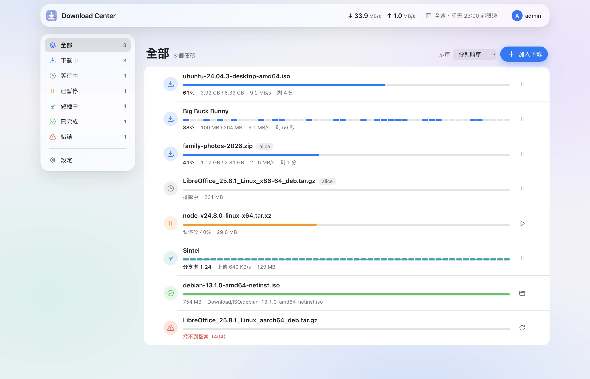
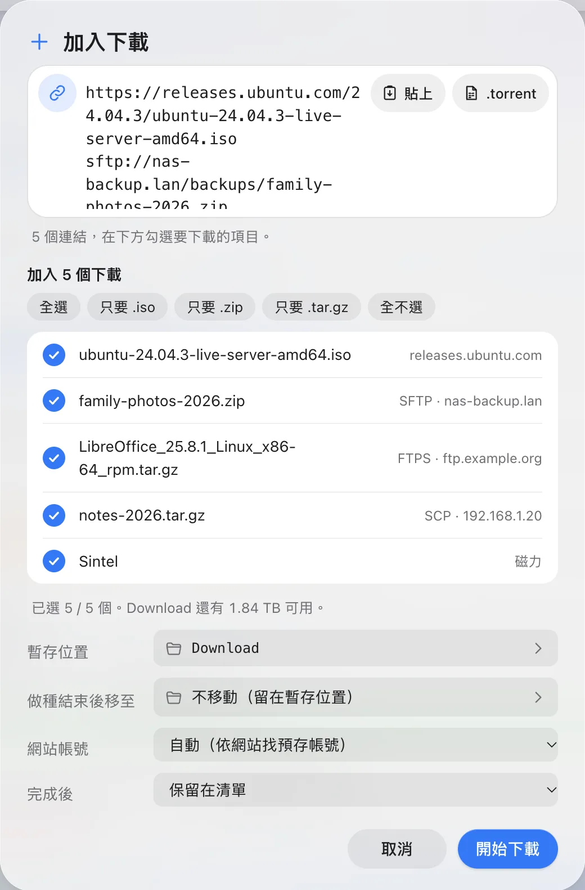
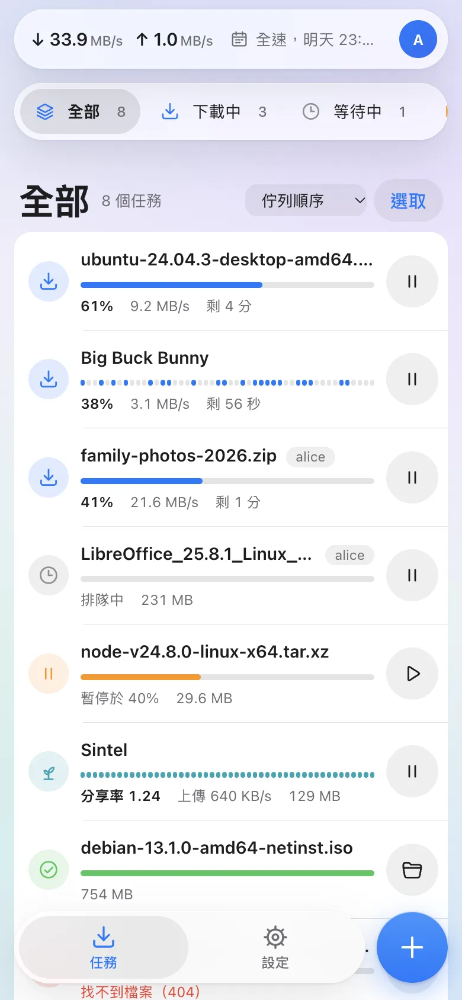
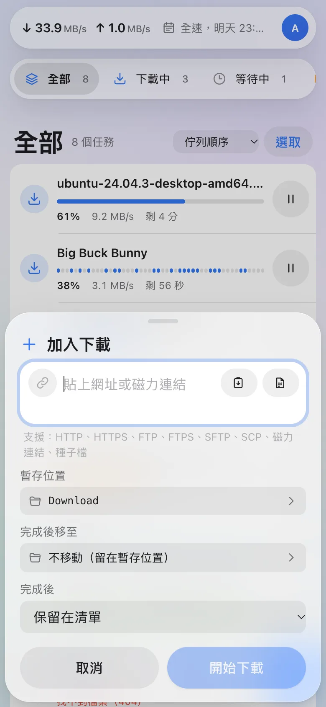
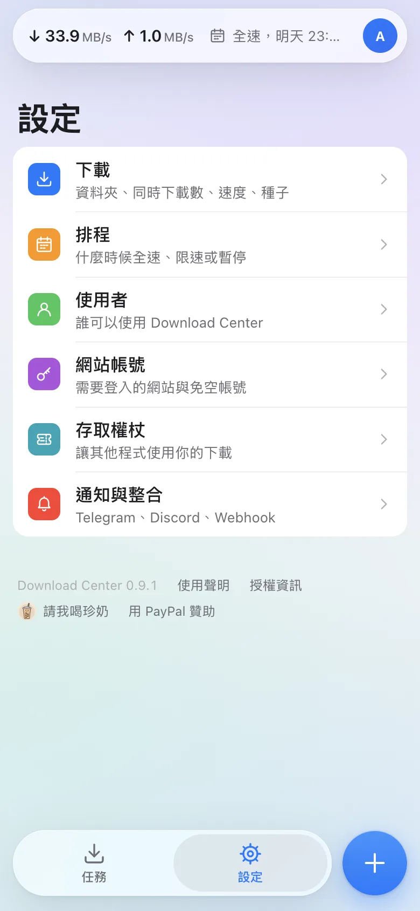
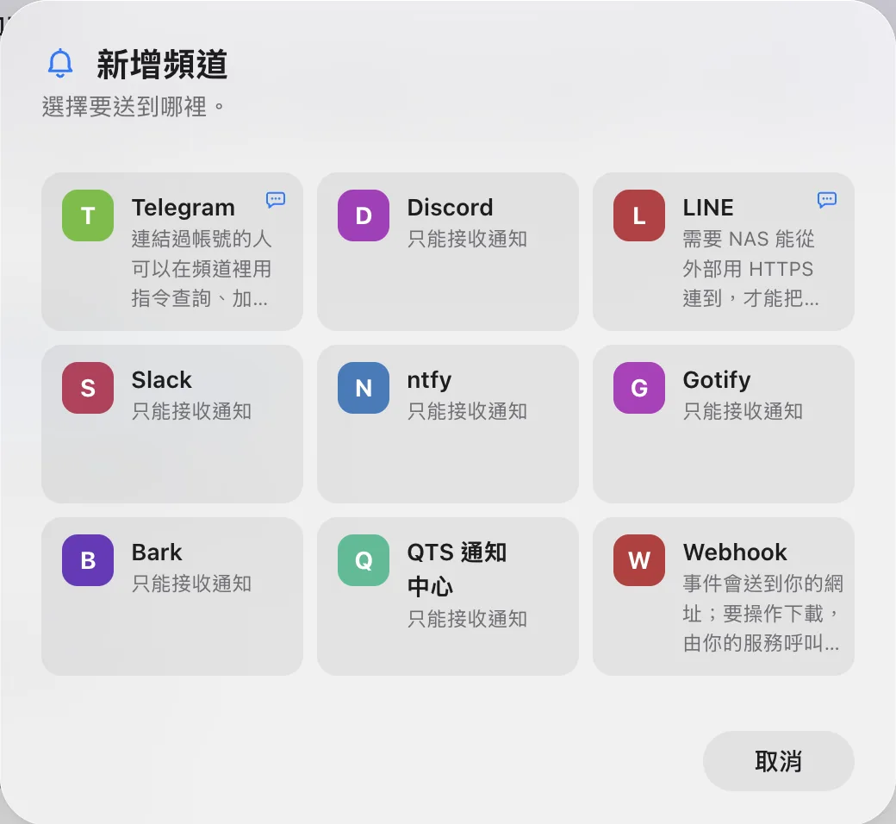
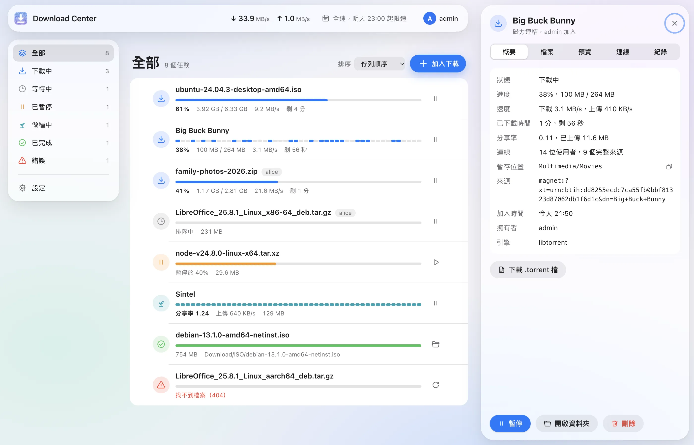

丟一個連結，
剩下的交給 NAS。
Download Center 是免費的 QNAP NAS 下載管理員。網址、FTP、SFTP、SCP、種子和磁力連結都放進同一份清單，在電腦前或手機上都看得到進度。
免費、開放原始碼（MIT 授權）。支援 Intel、AMD 與 ARM 的 QTS。淺色與深色，13 種語言。

能下載的比以前多
Download Center 認得的連結比 Download Station 多，而且全部放在同一份清單。貼一個連結或一整段文字都可以，它會自己找出連結，只問需要你決定的事。
https://http://網頁下載支援 HTTP/2；伺服器允許時，一個檔案最多用四條連線。
ftp://ftps://FTP 伺服器一般或加密連線都行，會帶上你為這個網站存的帳號。
sftp://任何 SSH 伺服器第一次連線時記下伺服器的金鑰，之後每次都會核對。
scp://SCP給只提供 SCP 的伺服器。
magnet:?磁力連結開始前先列出檔案，挑好要哪些再下載。
.torrent種子檔拖進視窗就好，手機上也能直接選檔案。
從中斷的地方接著下載
HTTP、FTP 與 SFTP 下載在暫停、斷線或 NAS 重新開機後，都會從原本的進度繼續。網址和種子都能走代理
HTTP 與 SOCKS5，可以每個任務或每個網站分別指定，也能由代理解析網域名稱。設定了代理就不會改走直連。迅雷、快車、QQ 旋風連結
不論貼在哪裡，都會先解開成裡面真正的網址。

和 Download Station 比較
| 可以下載 | Download Center | Download Station |
|---|---|---|
| HTTP 與 HTTPS | 可以 | 可以 |
| HTTP/2 | 可以 | 不行 |
| FTP | 可以 | 可以 |
| SFTP | 可以 | 不行 |
| SCP | 可以 | 不行 |
| 種子檔 | 可以 | 可以 |
| 磁力連結 | 可以 | 可以 |
手機上也好用
用任何瀏覽器打開 https://<你的 NAS>/DownloadCenter/ 就能用，不必先進 QTS 桌面。在手機上，它就是一個單手操作的 App。



拇指搆得到
分頁和加入按鈕都在畫面下方。視窗從底部升起，往下一滑就關閉。
放上主畫面
加入主畫面後，打開就是全螢幕，跟 App 一樣。
用 NAS 帳號登入
和 QTS 同一組帳號、同樣的規則，包括兩步驟驗證。
在 QTS 桌面裡也行
也能在 QTS 桌面以視窗開啟，視窗拉窄時版面會跟著調整。
下載好了會告訴你，回一句就能操作
下載完成、失敗或磁碟空間不足時，馬上收到訊息。在 Telegram 裡（NAS 能從外部用 HTTPS 連到時，LINE 也可以），還能直接回指令查看、加入、暫停或繼續下載。
/add https://cdimage.debian.org/debian-cd/current/amd64/iso-cd/debian-13.1.0-amd64-netinst.iso
已加入：debian-13.1.0-amd64-netinst.iso（等待中，第 2 位）
/list
- ubuntu-24.04.3-desktop-amd64.iso61% 9.2 MB/s，剩 4 分
- Big Buck Bunny38% 3.1 MB/s，剩 56 秒
- debian-13.1.0-amd64-netinst.iso等待中
/pause 1
已暫停：ubuntu-24.04.3-desktop-amd64.iso
下載完成：debian-13.1.0-amd64-netinst.iso
指令有 /list、/add <網址>、/pause、/resume、/speed 和 /help 等。每個聊天帳號都要用一次性的配對碼連結到 NAS 帳號，能做的事不會超過那個帳號的權限。

- Telegram通知與指令都可以，NAS 不必對外開放
- LINE通知；NAS 能從外部用 HTTPS 連到時也能下指令
- Discord、Slack通知送到頻道
- ntfy、Gotify、Bark推播到手機
- QTS 通知中心依 QTS 的規則寄電子郵件、簡訊或推播
- Webhook以 HMAC-SHA256 簽章，送給你自己的服務
給你自己的程式和腳本
REST API 搭配個人存取權杖（只能做你允許的事）、事件串流、透過 HTTP 的聊天指令和有簽章的 Webhook。新的通知服務用一小段 JSON 描述就能加入。
其他還有這些
點任何一個下載，就能看到它存在哪裡、有哪些檔案、預覽，種子還能看到連線的對象。

全部在同一份清單
貼一個或多個連結、一段文字或網頁網址都行。重複的項目會在加入前先標出來。
先挑再下載
磁力連結和種子會先列出檔案，只留你要的，或只要影片。
速限與每週排程
網址和種子各自的上限、每週全速／限速／暫停時段、定時暫停，以及依分享率或時間做種。
檔案放你要的地方
下載中放在暫存位置，完成後移到你指定的資料夾。
使用者與角色
系統管理者看得到全部；一般使用者只看得到自己的下載，檔案存在自己的家目錄，擁有者也是自己。
免空帳號
1fichier、Rapidgator、Real-Debrid 與 AllDebrid 透過官方 API 用你自己的帳號下載，其他網站可用 Cookie。公開分享的 Google 雲端硬碟連結不需要帳號，直接下載檔案本身。
邊下載邊預覽
已下載的部分可以先看或先聽，壓縮檔可以看裡面有什麼，種子也能改成依序下載。
原本的 App 照樣能用
移除或停用 Download Station 之後，Qget、Qfile 和瀏覽器外掛照樣連得上。
沿用 Download Station 的設定
匯入設定、未完成的下載、紀錄和網站帳號。匯入只讀取 Download Station 的資料，可以重複執行。
在你的 NAS 上執行
不用註冊，沒有雲端
Download Center 完全在你的 NAS 上執行。用 NAS 帳號登入，登入本身交給 QTS 處理。
開放原始碼
每一行程式碼都以 MIT 授權放在 GitHub 上，它做了什麼都看得到。
開始使用
下載適合你 NAS 的套件
依 NAS 的處理器選擇檔案。在 QTS 的「控制台 › 系統狀態」可以看到處理器型號。
在 App Center 安裝
打開 App Center，選「手動安裝」，再選這個檔案。這個套件沒有 QNAP 的數位簽章，所以 App Center 會提出警告；出現詢問時選擇允許，或在 App Center 的設定裡允許安裝沒有有效數位簽章的應用程式。
打開 Download Center
從 QTS 桌面開啟，或直接前往
https://<你的 NAS>/DownloadCenter/。第一位登入的 QTS 管理員會成為它的第一位系統管理者。
從 Download Station 換過來？安裝後可以在「設定」裡匯入設定、下載與網站帳號。Download Station 自己的檔案不會被更動。
即將推出
第一個版本正在準備中，推出後會出現在這裡和 GitHub 的 Releases 頁面。
該選哪一個？x86_64 給 Intel 與 AMD 處理器，arm_64 給 64 位元 ARM。arm-x41 和 arm-x31 內容是同一套 ARMv7 程式，只是依 QNAP 對 ARMv7 機種的兩種命名分別打包。
合法使用
- Download Center 只下載你提供的網址、種子檔或磁力連結，不提供、搜尋或推薦任何內容。
- 請只下載你有權取得的內容。
- 使用 BitTorrent 時，你在下載的同時也會把已有的片段分享給其他人，他們看得到你的 IP 位址。
獨立開發的專案
Download Center 與 QNAP 無關，獨立開發。它可以在你的 NAS 上取代 Download Station，並在不更動原資料的情況下匯入它的設定與下載。
下載什麼由你負責。如授權條款所述，本軟體不提供任何擔保。

讓 Download Center 繼續免費
Download Center 沒有廣告，也沒有付費版。如果它幫你省了時間，一杯珍奶或一點小額贊助，能幫我在每次 QTS 更新後讓它繼續正常運作，也能做出接下來的新功能。
珍奶用信用卡付款，不需要 PayPal 帳號。